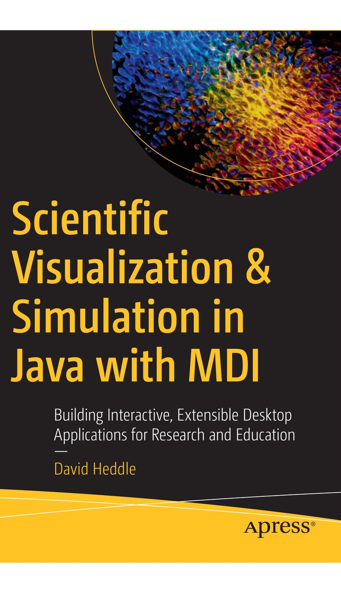

MDI
A Java framework for building interactive desktop applications for scientific visualization, simulation, and related technical work — and the companion site for the Apress book that teaches it.
Scientific Visualization & Simulation in Java with MDI · David Heddle · Apress · expected Q1 2027 · more about the book →

MDI (pronounced “midi”) organizes an application around independent views hosted in a common desktop: drawings, plots, maps, simulations, optimization problems, three-dimensional scenes, images, and application-specific scientific content. The framework supplies the recurring infrastructure — application and view management, menus and toolbars, drawable items, coordinate systems, plotting, mapping, simulation control, background execution, optimization support, and 3D visualization — so the application developer can focus on the science.
The Projects
Four repositories accompany the book. Each is a runnable, standalone Maven project.
mdi
The core framework: application and desktop management, views, drawable items, toolbars and rubberbanding, the sPlot plotting package, 2D mapping, and the simulation and optimization engines.
mdi-3D
A JOGL-based 3D extension. 3D views coexist with ordinary MDI views in the same application and reuse the framework’s application, simulation, and image-export infrastructure.
mdi_radar
A standalone radar/map demonstration: radar preset tools, map-native radar items, ETOPO5 terrain shading, and terrain-aware line-of-sight visualization, built on the mapping chapter’s architecture.
How the Book Is Organized
Get Started
Each project builds with Maven and requires Java 17 or later. Clone a repository and run its demo application, e.g.:
git clone https://github.com/heddle/mdi.git
cd mdi
mvn install
mvn exec:java -Dexec.mainClass=edu.cnu.mdi.app.DemoAppSee each project’s page for its specific entry point and dependencies.